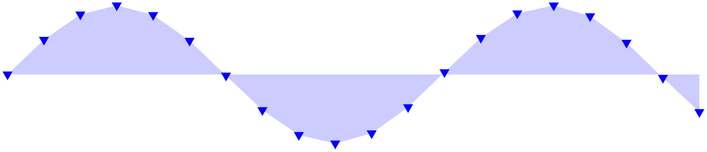
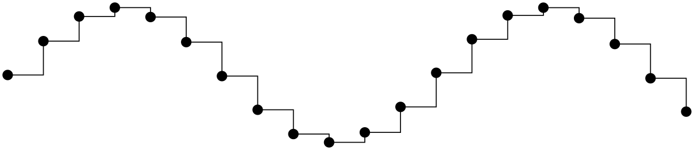
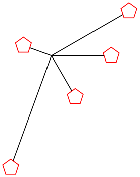

The TikZ and PGF Packages
Manual for version 3.1.10
TikZ
22 Plots of Functions¶
A warning before we get started: If you are looking for an easy way to create a normal plot of a function with scientific axes, ignore this section and instead look at the pgfplots package or at the datavisualization command from Part VI.
22.1 Overview¶
TikZ can be used to create plots of functions, a job that is normally handled by powerful programs like gnuplot or mathematica. These programs can produce two different kinds of output: First, they can output a complete plot picture in a certain format (like pdf) that includes all low-level commands necessary for drawing the complete plot (including axes and labels). Second, they can usually also produce “just plain data” in the form of a long list of coordinates. Most of the powerful programs consider it a to be “a bit boring” to just output tabled data and very much prefer to produce fancy pictures. Nevertheless, when coaxed, they can also provide the plain data.
The advantage of creating plots directly using TikZ is consistency: Plots created using TikZ will automatically have the same styling and fonts as those used in the rest of a document – something that is hard to do right when an external program gets involved. Other problems people encounter with external programs include: Formulas will look different, if they can be rendered at all; line widths will usually be too thick or too thin; scaling effects upon inclusion can create a mismatch between sizes in the plot and sizes in the text; the automatic grid generated by most programs is mostly distracting; the automatic ticks generated by most programs are cryptic numerics (try adding a tick reading “\(\pi \)” at the right point); most programs make it very easy to create “chart junk” in a most convenient fashion; arrows and plot marks will almost never match the arrows used in the rest of the document. This list is not exhaustive, unfortunately.
There are basically three ways of creating plots using TikZ:
-
1. Use the plot path operation. How this works is explained in the present section. This is the most “basic” of the three options and forces you to do a lot of things “by hand” like adding axes or ticks.
-
2. Use the datavisualization path command, which is documented in Part VI. This command is much more powerful than the plot path operation and produces complete plots including axes and ticks. The downside is that you cannot use it to “just” quickly plot a simple curve (or, more precisely, it is hard to use it in this way).
-
3. Use the pgfplots package, which is basically an alternative to the datavisualization command. While the underlying philosophy of this package is not as “ambitious” as that of the command datavisualization, it is somewhat more mature, has a simpler design, and wider support base.
22.2 The Plot Path Operation¶
The plot path operation can be used to append a line or curve to the path that goes through a large number of coordinates. These coordinates are either given in a simple list of coordinates, read from some file, or they are computed on the fly.
The syntax of the plot comes in different versions.
-
\path … --plot⟨further arguments⟩ …; ¶
This operation plots the curve through the coordinates specified in the ⟨further arguments⟩. The current (sub)path is simply continued, that is, a line-to operation to the first point of the curve is implicitly added. The details of the ⟨further arguments⟩ will be explained in a moment.
-
\path … plot⟨further arguments⟩ …; ¶
This operation plots the curve through the coordinates specified in the ⟨further arguments⟩ by first “moving” to the first coordinate of the curve.
The ⟨further arguments⟩ are used in different ways to specifying the coordinates of the points to be plotted:
-
1. --plot[⟨local options⟩]coordinates{⟨coordinate 1⟩⟨coordinate 2⟩…⟨coordinate \(n\)⟩}
-
2. --plot[⟨local options⟩]file{⟨filename⟩}
-
3. --plot[⟨local options⟩]⟨coordinate expression⟩
-
4. --plot[⟨local options⟩]function{⟨gnuplot formula⟩}
These different ways are explained in the following.
22.3 Plotting Points Given Inline¶
Points can be given directly in the TeX-file as in the following example:
Here is an example showing the difference between plot and --plot:
22.4 Plotting Points Read From an External File¶
The second way of specifying points is to put them in an external file named ⟨filename⟩. Currently, the only file format that TikZ allows is the following: Each line of the ⟨filename⟩ should contain one line starting with two numbers, separated by a space. A line may also be empty or, if it starts with # or % it is considered empty. For such lines, a “new data set” is started, typically resulting in a new subpath being started in the plot (see Section 112.2.2 on how to change this behavior, if necessary). For lines containing two numbers, they must be separated by a space. They may be following by arbitrary text, which is ignored, except if it is o or u. In the first case, the point is considered to be an outlier and normally also results in a new subpath being started. In the second case, the point is considered to be undefined, which also results in a new subpath being started. Again, see Section 112.2.2 on how to change this, if necessary. (This is exactly the format that gnuplot produces when you say set table.)
The file plots/pgfmanual-sine.table reads:
It was produced from the following source, using gnuplot:
The ⟨local options⟩ of the plot operation are local to each plot and do not affect other plots “on the same path”. For example, plot[yshift=1cm] will locally shift the plot 1cm upward. Remember, however, that most options can only be applied to paths as a whole. For example, plot[red] does not have the effect of making the plot red. After all, you are trying to “locally” make part of the path red, which is not possible.
22.5 Plotting a Function¶
When you plot a function, the coordinates of the plot data can be computed by evaluating a mathematical expression. Since pgf comes with a mathematical engine, you can specify this expression and then have TikZ produce the desired coordinates for you, automatically.
Since this case is quite common when plotting a function, the syntax is easy: Following the plot command and its local options, you directly provide a ⟨coordinate expression⟩. It looks like a normal coordinate, but inside you may use a special macro, which is \x by default, but this can be changed using the variable option. The ⟨coordinate expression⟩ is then evaluated for different values for \x and the resulting coordinates are plotted.
Note that you will often have to put the \(x\)- or \(y\)-coordinate inside braces, namely whenever you use an expression involving a parenthesis.
The following options influence how the ⟨coordinate expression⟩ is evaluated:
-
/tikz/variable=⟨macro⟩ (no default, initially \x) ¶
Sets the macro whose value is set to the different values when ⟨coordinate expression⟩ is evaluated.
-
/tikz/samples=⟨number⟩ (no default, initially 25) ¶
Sets the number of samples used in the plot.
-
/tikz/domain=⟨start⟩:⟨end⟩ (no default, initially -5:5) ¶
Sets the domain from which the samples are taken.
-
/tikz/samples at=⟨sample list⟩(no default) ¶
This option specifies a list of positions for which the variable should be evaluated. For instance, you can say samples at={1,2,8,9,10} to have the variable evaluated exactly for values \(1\), \(2\), \(8\), \(9\), and \(10\). You can use the \foreach syntax, so you can use ... inside the ⟨sample list⟩.
When this option is used, the samples and domain option are overruled. The other way round, setting either samples or domain will overrule this option.
\begin{tikzpicture}[domain=0:4]
\draw[very thin,color=gray] (-0.1,-1.1) grid
(3.9,3.9);
\draw[->] (-0.2,0) --
(4.2,0) node[right] {$x$};
\draw[->] (0,-1.2) --
(0,4.2) node[above] {$f(x)$};
\draw[color=red] plot
(\x,\x) node[right] {$f(x) =x$};
% \x r means to convert '\x' from degrees to _r_adians:
\draw[color=blue] plot
(\x,{sin(\x r)}) node[right] {$f(x) =
\sin x$};
\draw[color=orange] plot
(\x,{0.05*exp(\x)}) node[right] {$f(x) =
\frac{1}{20} \mathrm e^x$};
\end{tikzpicture}
22.6 Plotting a Function Using Gnuplot¶
Often, you will want to plot points that are given via a function like \(f(x) = x \sin x\). Unfortunately, TeX does not really have enough computational power to generate the points of such a function efficiently (it is a text processing program, after all). However, if you allow it, TeX can try to call external programs that can easily produce the necessary points. Currently, TikZ knows how to call gnuplot.
When TikZ encounters your operation plot[id=⟨id⟩] function{x*sin(x)} for the first time, it will create a file called ⟨prefix⟩⟨id⟩.gnuplot, where ⟨prefix⟩ is \jobname. by default, that is, the name of your main .tex file. If no ⟨id⟩ is given, it will be empty, which is alright, but it is better when each plot has a unique ⟨id⟩ for reasons explained in a moment. Next, TikZ writes some initialization code into this file followed by plot x*sin(x). The initialization code sets up things such that the plot operation will write the coordinates into another file called ⟨prefix⟩⟨id⟩.table. Finally, this table file is read as if you had said plot file{⟨prefix⟩⟨id⟩.table}.
For the plotting mechanism to work, two conditions must be met:
-
1. You must have allowed TeX to call external programs. This is often switched off by default since this is a security risk (you might, without knowing, run a TeX file that calls all sorts of “bad” commands). To enable this “calling external programs” a command line option must be given to the TeX program. Usually, it is called something like shell-escape or enable-write18. For example, for my pdflatex the option --shell-escape can be given.
-
2. You must have installed the gnuplot program and TeX must find it when compiling your file.
Unfortunately, these conditions will not always be met. Especially if you pass some source to a coauthor and the coauthor does not have gnuplot installed, he or she will have trouble compiling your files.
For this reason, TikZ behaves differently when you compile your graphic for the second time: If upon reaching plot[id=⟨id⟩] function{...} the file ⟨prefix⟩⟨id⟩.table already exists and if the ⟨prefix⟩⟨id⟩.gnuplot file contains what TikZ thinks that it “should” contain, the .table file is immediately read without trying to call a gnuplot program. This approach has the following advantages:
-
1. If you pass a bundle of your .tex file and all .gnuplot and .table files to someone else, that person can TeX the .tex file without having to have gnuplot installed.
-
2. If the \write18 feature is switched off for security reasons (a good idea), then, upon the first compilation of the .tex file, the .gnuplot will still be generated, but not the .table file. You can then simply call gnuplot “by hand” for each .gnuplot file, which will produce all necessary .table files.
-
3. If you change the function that you wish to plot or its domain, TikZ will automatically try to regenerate the .table file.
-
4. If, out of laziness, you do not provide an id, the same .gnuplot will be used for different plots, but this is not a problem since the .table will automatically be regenerated for each plot on-the-fly. Note: If you intend to share your files with someone else, always use an id, so that the file can by typeset without having gnuplot installed. Also, having unique ids for each plot will improve compilation speed since no external programs need to be called, unless it is really necessary.
When you use plot function{⟨gnuplot formula⟩}, the ⟨gnuplot formula⟩ must be given in the gnuplot syntax, whose details are beyond the scope of this manual. Here is the ultra-condensed essence: Use x as the variable and use the C-syntax for normal plots, use t as the variable for parametric plots. Here are some examples:
\begin{tikzpicture}[domain=0:4]
\draw[very thin,color=gray] (-0.1,-1.1) grid
(3.9,3.9);
\draw[->] (-0.2,0) --
(4.2,0) node[right] {$x$};
\draw[->] (0,-1.2) --
(0,4.2) node[above] {$f(x)$};
\draw[color=red] plot[id=x] function{x} node[right] {$f(x) =x$};
\draw[color=blue] plot[id=sin] function{sin(x)} node[right] {$f(x) =
\sin x$};
\draw[color=orange] plot[id=exp] function{0.05*exp(x)} node[right] {$f(x) =
\frac{1}{20} \mathrm e^x$};
\end{tikzpicture}
The plot is influenced by the following options: First, the options samples and domain explained earlier. Second, there are some more specialized options.
-
/tikz/parametric=⟨boolean⟩ (default true) ¶
Sets whether the plot is a parametric plot. If true, then t must be used instead of x as the parameter and two comma-separated functions must be given in the ⟨gnuplot formula⟩. An example is the following:
-
/tikz/range=⟨start⟩:⟨end⟩(no default) ¶
This key sets the range of the plot. If set, all points whose \(y\)-coordinates lie outside this range will be considered to be outliers and will cause jumps in the plot, by default:
-
/tikz/yrange=⟨start⟩:⟨end⟩(no default) ¶
Same as range.
-
/tikz/xrange=⟨start⟩:⟨end⟩(no default) ¶
Set the \(x\)-range. This makes sense only for parametric plots.
-
/tikz/id=⟨id⟩(no default) ¶
Sets the identifier of the current plot. This should be a unique identifier for each plot (though things will also work if it is not, but not as well, see the explanations above). The ⟨id⟩ will be part of a filename, so it should not contain anything fancy like * or $.
-
/tikz/prefix=⟨prefix⟩(no default) ¶
The ⟨prefix⟩ is put before each plot file name. The default is \jobname., but if you have many plots, it might be better to use, say plots/ and have all plots placed in a directory. You have to create the directory yourself.
-
/tikz/raw gnuplot(no value) ¶
This key causes the ⟨gnuplot formula⟩ to be passed on to gnuplot without setting up the samples or the plot operation. Thus, you could write
This can be useful for complicated things that need to be passed to gnuplot. However, for really complicated situations you should create a special external generating gnuplot file and use the file-syntax to include the table “by hand”.
The following styles influence the plot:
-
/tikz/every plot(style, initially empty) ¶
This style is installed in each plot, that is, as if you always said
plot[every plot,...]
This is most useful for globally setting a prefix for all plots by saying:
\tikzset{every plot/.style={prefix=plots/}}
22.7 Placing Marks on the Plot¶
As we saw already, it is possible to add marks to a plot using the mark option. When this option is used, a copy of the plot mark is placed on each point of the plot. Note that the marks are placed after the whole path has been drawn/filled/shaded. In this respect, they are handled like text nodes.
In detail, the following options govern how marks are drawn:
-
/tikz/mark=⟨mark mnemonic⟩(no default) ¶
Sets the mark to a mnemonic that has previously been defined using the \pgfdeclareplotmark. By default, *, +, and x are available, which draw a filled circle, a plus, and a cross as marks. Many more marks become available when the library plotmarks is loaded. Section 65.6 lists the available plot marks.
One plot mark is special: the ball plot mark is available only in TikZ. The ball color option determines the balls’s color. Do not use this option with a large number of marks since it will take very long to render in PostScript.
| Option | Effect |
| mark=ball |
-
/tikz/mark repeat=⟨r⟩(no default) ¶
This option tells TikZ that only every \(r\)th mark should be drawn.
-
/tikz/mark phase=⟨p⟩(no default) ¶
This option tells TikZ that the first mark to be draw should be the \(p\)th, followed by the \((p+r)\)th, then the \((p+2r)\)th, and so on.
\tikz \draw plot[mark=x,mark repeat=3,mark phase=6,smooth] file
{plots/pgfmanual-sine.table};
-
/tikz/mark indices=⟨list⟩(no default) ¶
This option allows you to specify explicitly the indices at which a mark should be placed. Counting starts with 1. You can use the \foreach syntax, that is, ... can be used.
-
/tikz/mark size=⟨dimension⟩(no default) ¶
Sets the size of the plot marks. For circular plot marks, ⟨dimension⟩ is the radius, for other plot marks ⟨dimension⟩ should be about half the width and height.
This option is not really necessary, since you achieve the same effect by specifying scale=⟨factor⟩ as a local option, where ⟨factor⟩ is the quotient of the desired size and the default size. However, using mark size is a bit faster and more natural.
-
/tikz/every mark(style, no value) ¶
This style is installed before drawing plot marks. For example, you can scale (or otherwise transform) the plot mark or set its color.
-
/tikz/mark options=⟨options⟩(no default) ¶
Redefines every mark such that it sets {⟨options⟩}.

-
/tikz/no marks(style, no value) ¶
Disables markers (the same as mark=none).
-
/tikz/no markers(style, no value) ¶
Disables markers (the same as mark=none).
22.8 Smooth Plots, Sharp Plots, Jump Plots, Comb Plots and Bar Plots¶
There are different things the plot operation can do with the points it reads from a file or from the inlined list of points. By default, it will connect these points by straight lines. However, you can also use options to change the behavior of plot.
-
/tikz/sharp plot(no value) ¶
This is the default and causes the points to be connected by straight lines. This option is included only so that you can “switch back” if you “globally” install, say, smooth.
-
/tikz/smooth(no value) ¶
This option causes the points on the path to be connected using a smooth curve:
Note that the smoothing algorithm is not very intelligent. You will get the best results if the bending angles are small, that is, less than about \(30^\circ \) and, even more importantly, if the distances between points are about the same all over the plotting path.
-
/tikz/tension=⟨value⟩(no default) ¶
This option influences how “tight” the smoothing is. A lower value will result in sharper corners, a higher value in more “round” curves. A value of \(1\) results in a circle if four points at quarter-positions on a circle are given. The default is \(0.55\). The “correct” value depends on the details of plot.
\begin{tikzpicture}[smooth cycle]
\draw plot[tension=0.2]
coordinates{(0,0) (1,1) (2,0) (1,-1)};
\draw[yshift=-2.25cm] plot[tension=0.5]
coordinates{(0,0) (1,1) (2,0) (1,-1)};
\draw[yshift=-4.5cm] plot[tension=1]
coordinates{(0,0) (1,1) (2,0) (1,-1)};
\end{tikzpicture}
-
/tikz/smooth cycle(no value) ¶
This option causes the points on the path to be connected using a closed smooth curve.
-
/tikz/const plot mark left(no value) ¶
Just an alias for /tikz/const plot.

-
/tikz/const plot mark right(no value) ¶
A variant of /tikz/const plot which places its mark on the right ends:
-
/tikz/const plot mark mid(no value) ¶
A variant of /tikz/const plot which places its mark in the middle of the horizontal lines:
More precisely, it generates vertical lines in the middle between each pair of consecutive points. If the mesh width is constant, this leads to symmetrically placed marks (“middle”).
-
/tikz/jump mark left(no value) ¶
This option causes the points on the path to be drawn using piecewise constant, non-connected series of lines. If there are any marks, they will be placed on left open ends:
-
/tikz/jump mark right(no value) ¶
This option causes the points on the path to be drawn using piecewise constant, non-connected series of lines. If there are any marks, they will be placed on right open ends:
-
/tikz/jump mark mid(no value) ¶
This option causes the points on the path to be drawn using piecewise constant, non-connected series of lines. If there are any marks, they will be placed in the middle of the horizontal line segments:
In case of non-constant mesh widths, the same remarks as for const plot mark mid apply.
-
/tikz/ycomb(no value) ¶
This option causes the plot operation to interpret the plotting points differently. Instead of connecting them, for each point of the plot a straight line is added to the path from the \(x\)-axis to the point, resulting in a sort of “comb” or “bar diagram”.
\begin{tikzpicture}[ycomb]
\draw[color=red,line width=6pt]
plot
coordinates{(0,1) (.5,1.2) (1,.6) (1.5,.7) (2,.9)};
\draw[color=red!50,line width=4pt,xshift=3pt]
plot
coordinates{(0,1.2) (.5,1.3) (1,.5) (1.5,.2) (2,.5)};
\end{tikzpicture}
-
/tikz/xcomb(no value) ¶
This option works like ycomb except that the bars are horizontal.
-
/tikz/polar comb(no value) ¶
This option causes a line from the origin to the point to be added to the path for each plot point.

\tikz \draw plot[polar comb,
mark=pentagon*,mark options={fill=white,draw=red},mark size=4pt]
coordinates
{(0:1cm) (30:1.5cm) (160:.5cm) (250:2cm) (-60:.8cm)};
-
/tikz/ybar(no value) ¶
This option produces fillable bar plots. It is thus very similar to ycomb, but it employs rectangular shapes instead of line-to operations. It thus allows to use any fill or pattern style.

The use of bar width and bar shift is explained in the plothandlers library documentation, section 65.4.
-
/tikz/xbar(no value) ¶
This option works like ybar except that the bars are horizontal.
-
/tikz/ybar interval(no value) ¶
As /tikz/ybar, this options produces vertical bars. However, bars are centered at coordinate intervals instead of interval edges, and the bar’s width is also determined relatively to the interval’s length:
\begin{tikzpicture}[ybar interval,x=10pt]
\draw[color=red,fill=red!80]
plot
coordinates{(0,2) (2,1.2) (3,.3) (5,1.7) (8,.9) (9,.9)};
\end{tikzpicture}
Since there are \(N\) intervals \([x_i,x_{i+1}]\) for given \(N+1\) coordinates, you will always have one coordinate more than bars. The last \(y\) value will be ignored.
You can configure relative shifts and relative bar widths, which is explained in the plothandlers library documentation, section 65.4.
-
/tikz/xbar interval(no value) ¶
Works like ybar interval, but for horizontal bar plots.
\begin{tikzpicture}[xbar interval,x=0.5cm,y=0.5cm]
\draw[color=red,fill=red!80]
plot
coordinates
{(3,0) (2,1) (4,1.5) (1,4) (2,6) (2,7)};
\end{tikzpicture}